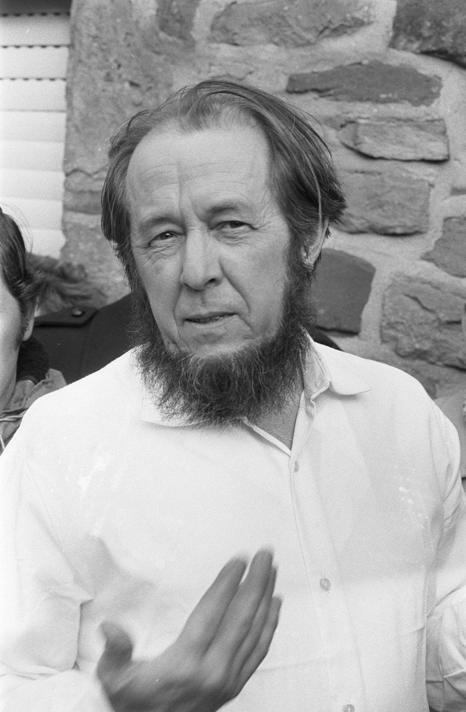

Optima Academy Online
An Education Experience Company
M/J CIVICS
Quarter / Module
Q2 · Module 5
Civic Participation, Foreign Policy, Comparative Government
Primary Source
5.27 Source 2
Author & Work
Aleksandr Solzhenitsyn, The Gulag Archipelago
Pairs With
5.26 Lesson · 5.28 Primary Source Exercise (Canvas)
5.27 Primary Source 2
Aleksandr Solzhenitsyn, The Gulag Archipelago (1973)
Read this, then complete 5.28 Primary Source Exercise in Canvas.
📖 CONTEXT
Solzhenitsyn wrote this after surviving eight years in the Gulag system himself, drawing on his own experience and testimony he gathered from hundreds of fellow former prisoners. Read it alongside Lesson 18.2's account of what an independent judiciary and free press exist to prevent.

📜 THE TEXT
“If only there were evil people somewhere insidiously committing evil deeds, and it were necessary only to separate them from the rest of us and destroy them. But the line dividing good and evil cuts through the heart of every human being. And who is willing to destroy a piece of his own heart?… During the life of any heart this line keeps changing place; sometimes it is squeezed one way by exuberant evil and sometimes it shifts to allow enough space for good to flourish. One and the same human being is, at various ages, under various circumstances, a totally different human being.”
(Standard public-domain translation, condensed.)
➡️ WHAT YOU'LL DO NEXT
1
5.28 Primary Source Exercise (Canvas)
Answer directly in the Canvas text box. Quote at least once from the excerpt above before answering the two questions in Canvas.
Optima Academy Online · M/J CIVICS · Quarter 2 · Primary Source Page
Week 18 · Aleksandr Solzhenitsyn, The Gulag Archipelago
© Optima Academy Online · An Education Experience Company